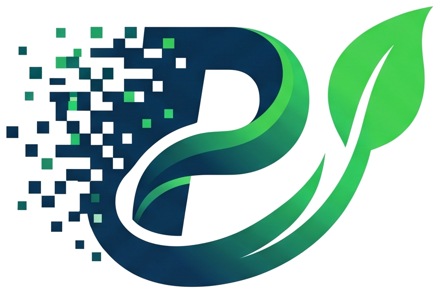

LiteLLM gateway
✔ Connected
https://litellm.your-company
••••••••••••

Poda AIDead code cleanup
Poda AI removes what nothing uses from a legacy application before you document or migrate it. SonarQube and a static analysis find it, an AI confirms it, and a deterministic engine removes it from a copy. Your original is never touched.
See it in action
A simulated run on a tiny sample. The real thing runs the same eight phases on your whole application.
import java.util.Vector;
import java.util.List;
public class OrderService {
private static final boolean LEGACY_MODE = false;
// total = o.getQty() * 9.99;
public Money process(Order o) {
if (LEGACY_MODE) { return legacyTotal(o); }
return pricing.total(o.getItems());
}
private Money legacyTotal(Order o) {
return Money.of(o.getQty() * 9.99);
}
public void exportToMainframe(Order o) { ... }
}Press Replay to run it again.
How it works
Nothing is removed without the AI: not even what SonarQube or the static analysis consider safe.
The dashboard
Connect a provider, pick the model, clean an application. Try the simulated dashboard below.
✔ Connected
✔ Connected as nalmale
✔ Connected as you@email.com
Your Pro/Max plan through the official CLI. Poda AI never sees your token.
✔ Changes are saved automatically.
What it removes
Blocks of code left in comments. Explanatory comments stay: they are useful documentation.
Imports, private and public methods, functions and fields that nothing reaches.
if (false), constant-false flags, statements after return or throw.
Classes, JSPs, scripts, images and vendor code that no live code reaches.
Jars and declared dependencies in Maven, Gradle, npm, pip, VB and NuGet that nothing uses.
Forever-off flags, mappings to classes that no longer exist, test pages and old versions.
Bring your own AI
Point it at your company gateway with a URL and an API key. Any model behind it works.
Connect with a one-time code. Costs are estimated from GitHub's published per-model rates.
Sign in with your Pro/Max account through the official claude CLI. Poda AI keeps its own session and never sees your token.
Also works with any LiteLLM provider from the command line: Bedrock, OpenAI, Azure, Gemini…
Safety first
output/, apart from your application.Get started
You need Docker. Copy each legacy app into target/, then:
# 1 · clone and start Poda AI with its own SonarQube
git clone https://github.com/nestoralmale24/PodaAI
cd PodaAI && docker compose up -d --build
# 2 · open the dashboard at http://127.0.0.1:8770/
docker exec -it poda-cli poda dashboard